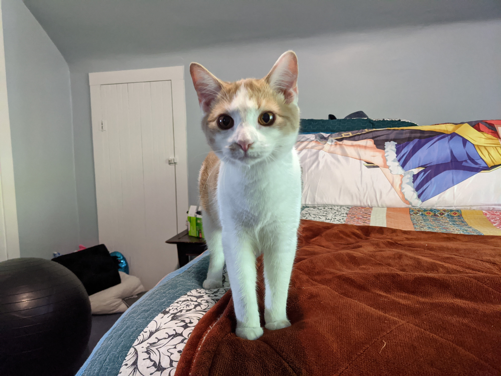
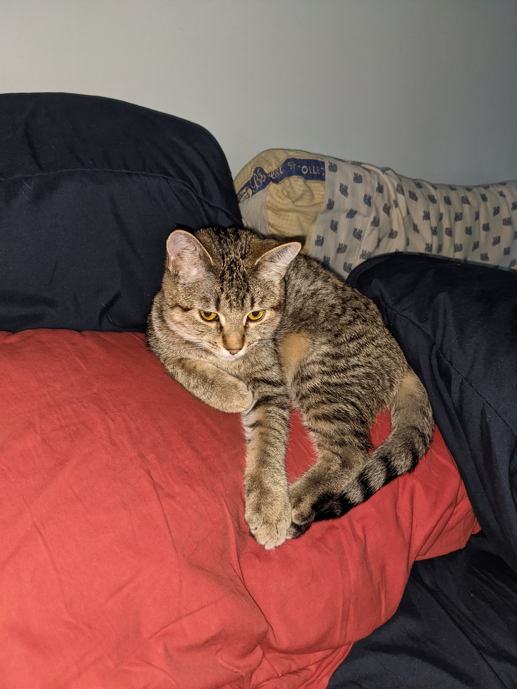

Madame Fuzzy Pants
Maddie was my first cat. She's 4 now.
She tends to be a bit of a princess
but we love her anyway.

Sebastian
Sebastian is my 16 year old son's cat
He is still a kitten, we got him in April 2020
He is a very talkative cat

Skittles
Skittles is my 9 year old's cat.
We got her in July after trying to have a dog
I realized that I am not a dog person after
having a dog, so we got Skittles to help my 9 year old
deal better with the loss of the dog. She is
only about 5 months old and loves cuddles
